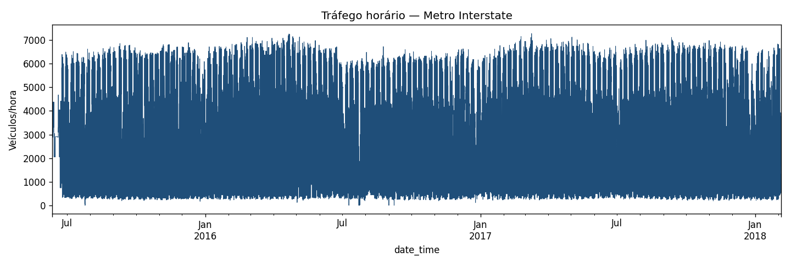
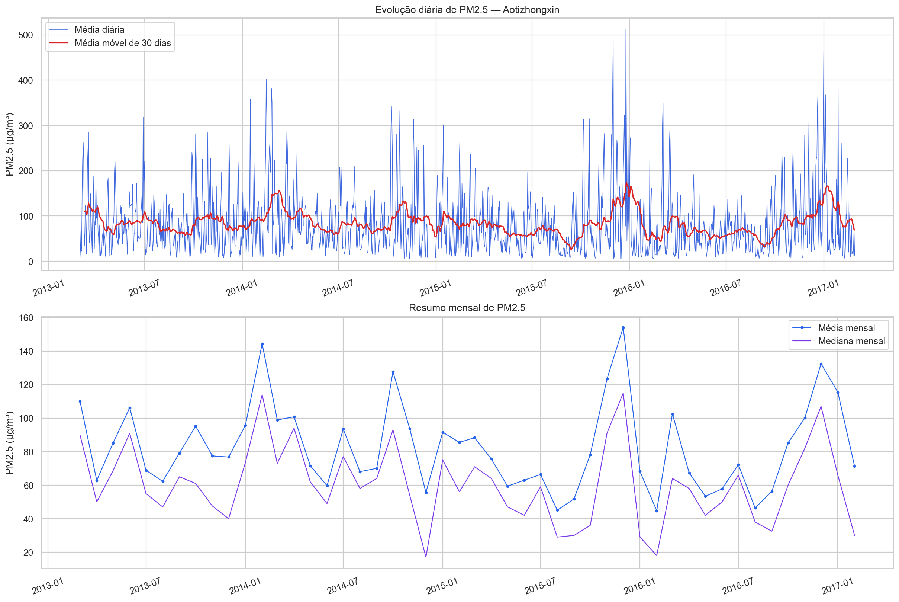
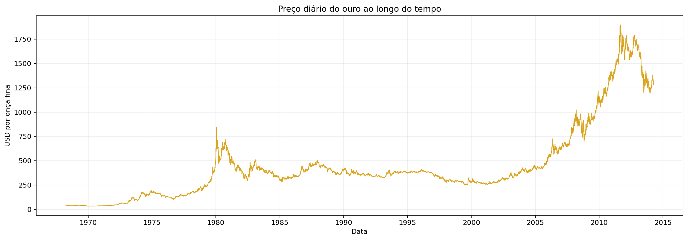
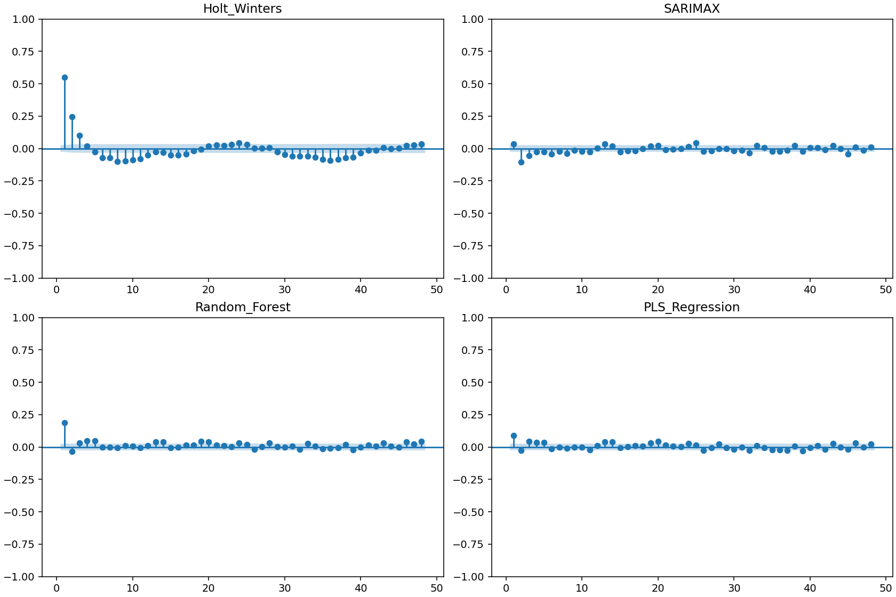

Como preparamos e comparamos cinco séries temporais
Quatro previsores, protocolo walk-forward e leitura crítica dos resultados
Apresentação · Outubro de 2026
Resumo executivo
O resultado não tem um vencedor universal: o desempenho depende da estrutura de cada série.
Bitcoin e ouro
PM2.5 e tráfego
Temperatura de Jena
mas segundo em três bases
Integrantes e responsabilidades
Integrantes
Registro disponível
Bruna Carvalho Cardoso: responsabilidade técnica documentada pela Base 2 — tráfego da I-94, incluindo documentação, limpeza, features, STL, modelos, resíduos, PLS e relatório da base.
Demais integrantes: os arquivos disponíveis não registram uma divisão individual confiável. Por isso, não atribuímos tarefas específicas sem evidência.
A apresentação não inclui registro diário de demandas.
Metodologia comum
1 · Preparação
Fonte, qualidade, ausências, duplicidades, irregularidades, atípicos e transformação.
2 · Features
Lags, janelas móveis, calendário e encoding cíclico, sempre sem informação futura.
3 · Seleção
Busca temporal no desenvolvimento. O teste não escolhe hiperparâmetros.
4 · Avaliação
Walk-forward de um passo, quatro modelos nas mesmas origens de cada base.
Modelos comparados
SARIMAX + externas
Holt-Winters univariado
Random Forest + externas
PLS Regression
Métrica
Menor erro absoluto médio = melhor posição dentro da base.
Bases analisadas
Bitcoin
CoinMarketCap · diário · USD
856 origens comunsTráfego I-94
UCI / MNDoT · horário · veículos/h
521 origensPM2.5
UCI Aotizhongxin · horário · µg/m³
6.023 origensJena
Max Planck · horário · °C
14.026 origensOuro
Bundesbank · mercado · USD/onça
296 origensCada base possui seu próprio protocolo temporal; os rankings são internos à escala da série.
Bitcoin: nível e tendência dominam
Documentação
Fonte: CoinMarketCap, fechamento diário priceClose.
Alvo: fechamento do dia seguinte, em USD.
Matriz tabular com 51 atributos: lags, volume, retornos, janelas e calendário.
Comparação comum: 856 dias, de 09/05/2024 a 11/09/2026.
STL e leitura
A tendência absorve o movimento lento; a sazonalidade medida não domina a previsão.
Decisões críticas
Cinco lacunas de 2023 foram interpoladas linearmente após a reindexação diária. O teste foi comparado somente na janela comum aos quatro modelos. Nenhum MAE entre bases foi agregado.
Tráfego: calendário e lags horários
Documentação
UCI, MNDoT e Weather Underground; volume horário em veículos/h.
7.629 timestamps duplicados; maior lacuna: 7.387 horas, não interpolada.
Segmento modelado posterior à lacuna; 2.295 horas internas imputadas causalmente.
36 features; PLS vencedor usa 32, sem clima.
STL
A tendência ficou estável: cerca de 3.463 veículos/h no início e 3.451 no fim.
Teste: 521 origens, passo de 11 horas.

PM2.5: concentração recente e hora do dia
Documentação
UCI Beijing Multi-Site Air-Quality, estação Aotizhongxin.
Alvo horário em µg/m³; 925 ausências do alvo foram preservadas.
17 features: lags, médias móveis, meteorologia e estações vizinhas.
Teste com 6.023 horas; previsões negativas foram cortadas em zero.
STL
A sazonalidade medida é fraca; o valor recente da concentração é mais informativo.

Jena: ciclo diário e meteorologia
Documentação
Max-Planck-Institut; medições de 10 minutos agregadas para hora.
Alvo: temperatura do ar em °C, uma hora à frente.
46 features: lags, diferenças, janelas e externas defasadas.
Teste reservado: 14.026 horas, em 42 blocos.
STL
O ciclo diário e a meteorologia defasada ajudam a explicar o próximo valor.
Ouro: série de mercado e pouca sazonalidade
Documentação
Fixing da tarde em Londres, série do Deutsche Bundesbank.
USD por onça fina; 9.864 observações modeláveis.
12 features: preço, lags, janelas, Treasury, Fed Funds e calendário cíclico.
Teste: 296 origens, a cada 5 observações de mercado.
STL
A configuração final manteve período 5 por decisão de validação, apesar da Fs nula.

PLS Regression: o modelo de especialização
Problema
Muitos lags e externas repetem a mesma informação. A colinearidade torna uma regressão comum instável.
Ideia
Construir componentes lineares que maximizam a covariância entre os preditores e o alvo.
Resultado
Regredir o alvo em poucas componentes, com padronização e escolha temporal do número de componentes.
Vantagens
Colinearidade, VIP, coeficientes e boa velocidade.
Hipóteses
Relação linear nas componentes; features disponíveis na origem.
Limitações
Não captura bem limiares e interações não lineares.
Aplicação do PLS nas cinco bases
Bitcoin
MAE 2.608,61 · 4º
PM2.5
MAE 9,6643 · 2º
Jena
MAE 0,3983 · 1º
Ouro
MAE 11,6002 · 3º
Tráfego
MAE 191,70 · 2º
O PLS venceu Jena, ficou próximo do Random Forest no PM2.5 e no tráfego, e perdeu para modelos mais simples nas séries de preço.
Quatro modelos, cinco estruturas
Holt-Winters
Referência univariada. Forte em níveis de preço; depende da configuração sazonal.
2 vitóriasSARIMAX
Linear, com externas. Estável em segundo lugar, mas custoso no tráfego.
0 vitóriasRandom Forest
Não linear. Forte quando lags e calendário formam regras locais.
2 vitóriasPLS
Linear nas componentes. Forte com colinearidade e externas informativas.
1 vitóriaLeitura crítica
Preço: o último nível observado é difícil de superar em um passo.
Jena: ciclo diário e meteorologia dão espaço para o PLS.
Tráfego: lags 1, 168 e 336 dominam; a árvore captura relações locais.
PM2.5: Random Forest e PLS ficam muito próximos.
Bitcoin
Vencedor
A comparação usa 856 datas comuns. A força sazonal STL foi nula nos períodos avaliados; a tendência foi muito forte.
O PLS termina em 4º com 51 atributos colineares.
Tráfego da I-94
Vencedor
521 origens, passo de 11 horas. Redução de 44,3% contra o baseline sazonal de 168 horas.
PLS sem clima fica em segundo; SARIMAX teve convergência de 83,5% no teste.
PM2.5 de Aotizhongxin
Vencedor
A diferença para o PLS é 0,1512 µg/m³. Ambos usam as mesmas 17 features.
A STL mostrou força sazonal diária muito baixa: 0,0130.
Temperatura horária de Jena
Vencedor
Ganho de 41,5% contra a persistência de 0,6813 °C.
Venceu 21 dos 42 blocos de 336 horas; o ciclo diário teve força sazonal 0,686.
Ouro diário de Londres
Vencedor
A validação havia escolhido o PLS; o teste inverteu a ordem. Os hiperparâmetros continuaram congelados.
Os três primeiros ficaram próximos da persistência: 11,6377 USD/onça.
Ranking global dos modelos
Holt-Winters
vitórias: Bitcoin e ouro
posição média: 2,60
Random Forest
vitórias: PM2.5 e tráfego
posição média: 2,40
PLS
vitória: Jena
posição média: 2,40
SARIMAX
nenhuma vitória
posição média: 2,60
| Modelo | Bitcoin | PM2.5 | Jena | Ouro | Tráfego | Vitórias | Média |
|---|---|---|---|---|---|---|---|
| Random Forest | 3º | 1º | 3º | 4º | 1º | 2 | 2,40 |
| PLS | 4º | 2º | 1º | 3º | 2º | 1 | 2,40 |
| Holt-Winters | 1º | 4º | 4º | 1º | 3º | 2 | 2,60 |
| SARIMAX | 2º | 3º | 2º | 2º | 4º | 0 | 2,60 |
Empates na posição média são possíveis; o número de vitórias diferencia os modelos.
Resíduos, ACF e Ljung-Box
Leitura dos resíduos
Bitcoin: Holt-Winters não rejeita no lag 1; os outros três rejeitam.
PM2.5: os quatro rejeitam no lag 24; a ACF residual permanece detectável.
Jena: os quatro rejeitam no lag 24, apesar de ACF muito pequena no PLS.
Ouro: Holt-Winters e PLS não rejeitam nos lags 1–20.
Tráfego: PLS não rejeita o lag 24; Holt-Winters mantém ACF forte.
Tráfego · sequência horária
O teste usa 168 previsões horárias consecutivas para interpretar o ciclo principal.


Feature importance: o passado recente domina
Bitcoin
RF: log_close_lag1 0,448
RF: close_lag1 0,363
PLS: maior coeficiente em close_lag1
PM2.5
RF: pm25_t 0,547
RF: média de 3 h 0,231
PLS VIP: pm25_t 1,52
Jena
RF: T_lag1 0,785
PLS VIP: T_lag1 1,575
Externa: rho_lag1 1,515
Ouro
RF: GOLD_PRICE 0,901
PLS VIP: GOLD_PRICE 1,50
Permutação: +348 USD de MAE
Tráfego
RF: y_lag1 0,157
RF: y_lag168 0,155
PLS: permutação y_lag1 +1.425,60
Como ler
Impureza mede divisão nas árvores.
VIP acompanha contribuição nas componentes.
Permutação mede aumento do MAE.
Conclusões
Não há vencedor único
A estrutura da série define o melhor compromisso entre nível, sazonalidade, relações lineares e não lineares.
PLS funciona melhor com contexto
Jena é o melhor caso: ciclo diário forte, externas defasadas e colinearidade controlada.
O baseline importa
No ouro, os três primeiros modelos ficam muito próximos da persistência.
Holt-Winters: referência forte para séries de nível.
Random Forest: melhor quando regras locais e não linearidades ajudam.
PLS: alternativa interpretável para features colineares.
SARIMAX: modelo linear útil, mas mais custoso no tráfego.
Limitações e recomendações
Limitações registradas
Protocolos diferem em cadência, janela e tamanho de teste.
MAE não pode ser agregado diretamente entre bases.
Alguns p-valores de exógenas do SARIMAX não foram exportados.
Gráficos de Bitcoin e Jena ficam nos notebooks executados.
A força anual do Bitcoin e a força de tendência do tráfego não foram impressas.
Recomendações
Exportar as tabelas completas de coeficientes e p-valores do SARIMAX.
Corrigir o rótulo de datas do arquivo de previsões do PLS do Bitcoin.
Manter baselines junto aos resultados oficiais.
Avaliar horizontes maiores, especialmente no ouro e no Bitcoin.
Referências
CLEVELAND et al. STL: a seasonal-trend decomposition procedure based on loess. 1990.
HYNDMAN; ATHANASOPOULOS. Forecasting: Principles and Practice. 2021.
WOLD; SJÖSTRÖM; ERIKSSON. PLS-regression: a basic tool of chemometrics. 2001.
BREIMAN. Random forests. Machine Learning, 2001.
LJUNG; BOX. On a measure of lack of fit in time series models. 1978.
UCI Machine Learning Repository — Beijing Multi-Site Air-Quality.
UCI Machine Learning Repository — Metro Interstate Traffic Volume.
Max-Planck-Institut für Biogeochemie — Jena Climate.
Deutsche Bundesbank — série BBEX3.D.XAU.USD.EA.AC.C05.
CoinMarketCap — série diária BTC/USD.
analyses/grupo1 a analyses/grupo5 · relatório consolidado: docs/relatorios/consolidado